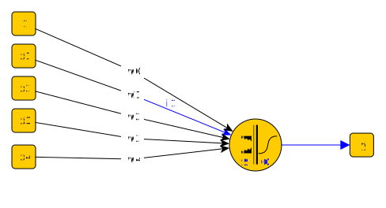

17. Model learning strategies#
The model optimisation requires
Method to evaluate the quality of a current model
A strategy for improving the model one step better
Usually the model quality is evaluated by means of a Loss function and optional regularization term. The loss function shows how large error the model makes in prediction and the regularization term shows how complex the model is. The purpose of the optimization is to minimize both the prediction error and complexity of the model. Too complex model may cause overfitting, and therefore regularization is important.
Let \(f()\) be the scoring function which estimates the prediction \(\hat y = f(x_i)\).
17.1. Minimization of the Error function#
The general strategy of the model optimisation is then to minimize the regularized training error, \(E\), which includes both prediction losses and reqularization term:
The regularization coefficient, \(\alpha\), determines the tradeoff between model complexity and prediction accuracy.
17.2. Loss functions#
The model leads to different models depending on the loss functions selected and the regularization used. For example the minimization of the error function using \(L_2\) norm without regularization leads to OLS regression model, and with \(L_2\) regularization to ridge regression model.
For example, consider the following two dimensional regression problem:
The \(L_2\) loss function for the problem is: $\(L=(y-\hat y)^2 = (y - f(x))^2\)$
Without regularization, the loss function can be directly used as error function, and it’s minimization leads to Linear regression model. By adding \(L_2\) regularization, it leads to ridge regression model, which can both be solved with closed form solutions, but the model can also be found by iterative optimization.
The optimization methods, such as gradient descent method, can be applied indentically to many other loss functions than \(L_2\)-norm, providing and interesting general framework for developing many kinds of machine learning models. The model type will be different when it is optimised with different loss functions and different regularization terms are used.
The most often used loss functions and their relation to the model types are shown in the following table:
Name |
Loss function |
Type |
|---|---|---|
Hinge loss |
$\(L(y_i, f(x_i) = max\left(0,1-y_i f(x_i)\right)\)$ |
Support vector Classification |
Perceptron |
$\(L(y_i, f(x_i) = max\left(0,-y_i f(x_i)\right)\)$ |
ANN |
Huber |
$$L(y_i, f(x_i) = \epsilon |
y_i-f(x_i) |
Modified Huber |
$\(L(y_i, f(x_i) = max\left(0,1-y_i f(x_i)\right)^2, ...\)$ |
Classification |
Log |
$\(L(y_i, f(x_i) = log\left(1+e^{-y_i f(x_i)}\right)\)$ |
Logistic regression |
\(L_2\) |
$\(L(y_i, f(x_i) = \frac{1}{2} \left(y_i,-f(x_i)\right)^2\)$ |
OLS, Ridge or Lasso |
Epsilon insensitive |
$$L(y_i, f(x_i) = max\left(0, |
y_i,-f(x_i) |
This means that one common optimisation framework can implement many common machine learning solutions which are often trained with specialized program code.
import numpy as np
import matplotlib.pyplot as plt
import seaborn as sns
sns.set()
from ipywidgets import interact, interactive, fixed, interact_manual
import ipywidgets as widgets
hinge = lambda yh, y: np.maximum(0, 1-y*yh)
perceptron = lambda yh, y: np.maximum(0, -y*yh)
huber = lambda yh, y, e=1.35: e-abs(y-yh)-1/2*e**2
mhuber = lambda yh, y: np.maximum(0, 1-y*yh)**2
logreg = lambda yh, y: np.log(1+np.exp(-y*yh))
l2norm = lambda yh, y: 1/2 * (y-yh)**2
l1norm = lambda yh, y: np.abs(y-yh)
epsilon= lambda yh, y, e=1.35: np.maximum(0, np.abs(y-yh)-e)
lossfunctions={'C: Hinge': hinge,
'C: Perceptron' : perceptron,
'C: Modified Huber': mhuber,
'C: Logistic' : logreg,
'R: Huber': huber,
'R: L2' : l2norm,
'R: L1' : l1norm,
'R: Epsilon insensitive' : epsilon}
yh=np.linspace(-5,5)
def test(y=0, loss='L2'):
global yh, lossfunctions
loss = lossfunctions[loss](yh, y)
plt.figure()
plt.plot(yh, loss)
plt.axvline(0, linestyle='--')
interact(test, y=[1, -1], loss=lossfunctions.keys())
<function __main__.test(y=0, loss='L2')>
y=1
fig, (axc, axr) = plt.subplots(1,2,figsize=(14,5))
for lfname in lossfunctions:
if lfname.startswith('C'):
ax=axc
else:
ax=axr
loss=lossfunctions[lfname](yh,y)
ax.plot(yh, loss, label=lfname)
axc.legend()
axr.legend()
axc.set_ylim(-1,10)
axr.set_ylim(-1,10)
axc.set_xlabel(r'$\hat y$')
axr.set_xlabel(r'$\hat y$')
axc.set_title('Loss functions for classification')
axr.set_title('Loss functions for regression')
axc.plot([1,1], [-0.5,0.5], 'k:')
axr.plot([1,1], [-0.5,0.5], 'k:')
[<matplotlib.lines.Line2D at 0x789bd01d8e10>]
18. Gradient descent#
The Gradient descent is a common optimisation strategy, where the minimal value of the scoring function \(f(x)\) is found by calculating the partial derivatives of \(f()\) by all of its parameters, and updating the model parameters towards the negative gradient.
Gradient descent calculates the gradient using all samples in the training set, which may be rather resource intensive.
19. Stochastic gradient descent (SGD)#
The utilize computational resources more efficiently, the gradient descent method can be modified so that it calculates the gradient and updates the model for every individual sample in the training set. This method provides only noisy estimate of the gradient, and the models is not advancing towards the minimum as directly as the gradient decent, but it usually converges faster than Gradient Descent. Due to this partly stochastic behaviour, this method is called as Stochastic Gradient Descent (SGD).
In SGD the learning of the model is made in the following steps:
The training data is shuffled in random order
Initial values for models parameters, e.g. \(w_1, w_2\) and \(b\) are set. They can be selected randomly or using some educated guess.
The training data is went through in random order performing the following actions for each sample
Calculate the loss \(L(w,b)\) of the prediction
Calculate the complecity \(R(w,b)\) of the prediction
Update the parameters using the partial derivative of the error function by each model parameter \((w,b)\)
When all samples are went through, reshuffle the data and run the next iteration. If the loss is below a threshold, stop the process and return the trained model
19.1. The partial derivatives needed in the update step#
The model parameters are updated using the partial derivatives. If the loss function is the L2 norm, and the learning rate \(\eta \in ]0,1[\), the new values for \(w_1, w_2\) and \(b\) are calculated as follows:
20. Learning in Neural Networks#
20.1. The backpropagation algorithm#
When using Stochastic Gradient Descent (SGD) training, the weights, \(w_i\), are updated towards the gradient (multidimensional derivative) or the loss function. $\( w \leftarrow w - \eta \left(\alpha \frac{\partial R(w)}{\partial w} + \frac{\partial L(w)}{\partial w}\right), \)$
where \(\eta\) is the learning rate, \(\alpha\) is the regularization term (L2 penalty for exessive model complexity), \(R\) is a function related to model complexity and \(L\) is a loss function. The weights of the model are simply updated to the direction where the model loss is reduced and model complexity is reduced.
Let us use the following perceptron as an example: 
First the network predicts the output \(\hat{y} = f(x)\) using the current weights \(w\).
This prediction is perhaps not accurate but has a prediction error \(y-\hat y\).
To make the network better, each coefficient \(w\) will be modified to make the error smaller. To calculate the direction and magnitude of change, the partial derivative of the output by the specific weight is calculated
To update weight \(w_1\), we’ll calculate \(\frac{\partial L}{\partial w_1}\). The chain rule can be used for the calculation. For simplicity, it is assumed that the regularization is not being used.
\( S= \bf{w} \cdot \bf{x}\)
Sigmoid: \(\partial a(x) / \partial x = x(1-x)\) $\( \frac{\partial L}{\partial w_1} = \frac{\partial L}{\partial \hat y} \cdot \frac{\partial \hat y}{\partial S} \cdot \frac{\partial S}{\partial w_1} = \left(2\cdot (y-\hat y)\right) \cdot \left( S(1-S) \right) \cdot \left( x_1 \right) \)$
Relu: \(\partial a(x) / \partial x = 1\) (or 0 when \(x \leq 0\) $\( \frac{\partial L}{\partial w_1} = \frac{\partial L}{\partial \hat y} \cdot \frac{\partial \hat y}{\partial S} \cdot \frac{\partial S}{\partial w_1} = \left(2\cdot (y-\hat y)\right) \cdot \left( 1 \right) \cdot \left( x_1 \right) = 2 (y-\hat y) x_1 \)$
To update the perceptron using ReLU towards negative gradient for a step \(\eta\) requires that \(w_1\) will be updated as follows:
If S is negative for a neuron using ReLU, the output and the derivative will be zero, and the neuron is not updated in this run.
21. Mini-batch#
A mini-batch approach is similar than SGD, but instead of calculating the gradient from only one sample at the time, the mini-batch approach is to calculate the gradient from a small batch of samples at the time.
22. Example#
import numpy as np
from sklearn.linear_model import SGDClassifier
from sklearn.preprocessing import StandardScaler
from sklearn.pipeline import make_pipeline
from sklearn import datasets
from sklearn.metrics import accuracy_score, r2_score
from sklearn.model_selection import train_test_split
from snippets import plotDB, DisplaySupportVectors
from sklearn.linear_model import SGDRegressor
from sklearn.datasets import load_boston
from sklearn.model_selection import cross_val_score
boston=load_boston();
---------------------------------------------------------------------------
ImportError Traceback (most recent call last)
Cell In[5], line 11
8 from snippets import plotDB, DisplaySupportVectors
10 from sklearn.linear_model import SGDRegressor
---> 11 from sklearn.datasets import load_boston
12 from sklearn.model_selection import cross_val_score
14 boston=load_boston();
File ~/miniforge3/envs/octave/lib/python3.11/site-packages/sklearn/datasets/__init__.py:157, in __getattr__(name)
108 if name == "load_boston":
109 msg = textwrap.dedent("""
110 `load_boston` has been removed from scikit-learn since version 1.2.
111
(...)
155 <https://www.researchgate.net/publication/4974606_Hedonic_housing_prices_and_the_demand_for_clean_air>
156 """)
--> 157 raise ImportError(msg)
158 try:
159 return globals()[name]
ImportError:
`load_boston` has been removed from scikit-learn since version 1.2.
The Boston housing prices dataset has an ethical problem: as
investigated in [1], the authors of this dataset engineered a
non-invertible variable "B" assuming that racial self-segregation had a
positive impact on house prices [2]. Furthermore the goal of the
research that led to the creation of this dataset was to study the
impact of air quality but it did not give adequate demonstration of the
validity of this assumption.
The scikit-learn maintainers therefore strongly discourage the use of
this dataset unless the purpose of the code is to study and educate
about ethical issues in data science and machine learning.
In this special case, you can fetch the dataset from the original
source::
import pandas as pd
import numpy as np
data_url = "http://lib.stat.cmu.edu/datasets/boston"
raw_df = pd.read_csv(data_url, sep="\s+", skiprows=22, header=None)
data = np.hstack([raw_df.values[::2, :], raw_df.values[1::2, :2]])
target = raw_df.values[1::2, 2]
Alternative datasets include the California housing dataset and the
Ames housing dataset. You can load the datasets as follows::
from sklearn.datasets import fetch_california_housing
housing = fetch_california_housing()
for the California housing dataset and::
from sklearn.datasets import fetch_openml
housing = fetch_openml(name="house_prices", as_frame=True)
for the Ames housing dataset.
[1] M Carlisle.
"Racist data destruction?"
<https://medium.com/@docintangible/racist-data-destruction-113e3eff54a8>
[2] Harrison Jr, David, and Daniel L. Rubinfeld.
"Hedonic housing prices and the demand for clean air."
Journal of environmental economics and management 5.1 (1978): 81-102.
<https://www.researchgate.net/publication/4974606_Hedonic_housing_prices_and_the_demand_for_clean_air>
X,y=datasets.make_blobs(n_samples=500, centers=3, n_features=2, random_state=0)
X_train, X_test, y_train, y_test = train_test_split(X,y, test_size=0.25)
# Always scale the input. The most convenient way is to use a pipeline.
# Default values for the classifier are pretty good, but you can try to change them
model = make_pipeline(StandardScaler(),
SGDClassifier(max_iter=1000, tol=1e-3, loss='hinge', penalty='L2', alpha=0.01))
model.fit(X_train, y_train)
yh_train=model.predict(X_train)
yh_test=model.predict(X_test)
#plt.scatter(X[:,0], X[:,1], c=y, cmap='rainbow')
#plt.xlabel('Feature 1')
#plt.ylabel('Feature 2')
plotDB(model, X, y)
print("Accuracy training..", accuracy_score(y_train,yh_train))
print("Accuracy test......", accuracy_score(y_test,yh_test))
Accuracy training.. 0.9413333333333334
Accuracy test...... 0.92
X= boston['data']
y= boston['target']
X_train, X_test, y_train, y_test = train_test_split(X,y, test_size=0.25, shuffle=True)
model = make_pipeline(StandardScaler(),
SGDRegressor(max_iter=1000, tol=1e-4, loss='squared_error', alpha=0.2))
%time model.fit(X_train, y_train)
print("Number of interations needed:", model[1].n_iter_)
# Cross_val_score and score are coefficient of determinations, R^2
RsquaredTR=model.score(X_train, y_train)
RSquaredTE=model.score(X_test, y_test)
RSquaredTA=model.score(X,y)
sns.regplot(x=y,y=model.predict(X), line_kws={"color": "red"})
RsquaredCV=cross_val_score(model, X, y, cv=5).mean()
plt.xlabel('True price')
plt.ylabel('Predicted price')
plt.title('Comparison of two-feature model, $R^2$=%3.2f' % RsquaredCV)
print("")
print("Training score.....", RsquaredTR)
print("CV score...........", RsquaredCV)
print("Testing score......", RSquaredTE)
print("All samples score..", RSquaredTA)
CPU times: user 2.24 ms, sys: 804 µs, total: 3.05 ms
Wall time: 2.49 ms
Number of interations needed: 19
Training score..... 0.7131419729477999
CV score........... 0.4629178151630411
Testing score...... 0.7383414651344274
All samples score.. 0.7189004574726183
22.1. Partial learning#
The SGD modules can be also trained step by step
# Step by step
reg = SGDRegressor(max_iter=1000, tol=1e-4, loss='squared_error', alpha=0, penalty='L2')
scaler = StandardScaler()
X_tr = scaler.fit_transform(X_train)
X_te = scaler.fit_transform(X_test)
scores_tr=[]
scores_te=[]
for i in range(1700):
reg.partial_fit(X_tr, y_train)
scores_tr.append(reg.score(X_tr, y_train))
scores_te.append(reg.score(X_te, y_test))
fig, (ax1, ax2)=plt.subplots(1,2, figsize=(12,4))
ax1.stem(reg.coef_)
print(i, reg.score(X_tr, y_train), reg.score(X_te, y_test))
ax2.plot(scores_tr, label='Training')
ax2.plot(scores_te, label='Testing')
ax2.legend()
1699 0.7342712663890836 0.755665784954104
<matplotlib.legend.Legend at 0x7f33a589acd0>
boston.feature_names[[5,10,12]]
array(['RM', 'PTRATIO', 'LSTAT'], dtype='<U7')
boston.feature_names
array(['CRIM', 'ZN', 'INDUS', 'CHAS', 'NOX', 'RM', 'AGE', 'DIS', 'RAD',
'TAX', 'PTRATIO', 'B', 'LSTAT'], dtype='<U7')